MapNG
MapNGYour own OSM data, in more formats
Use your own OSM file in Map data used to take .osm, .osm.pbf, Overpass JSON and GeoJSON. It now opens the files the big extract services hand out as they are, without converting them first. MapNG recognises a file by its contents, not only its name, and unpacks it layer by layer: an .o5m inside an .xz, or an .osm inside a .zip, opens too.
| Format | Where it comes from | What you get |
|---|---|---|
.osm.bz2, .osm.xz, .osm.gz | planet.openstreetmap.org and Geofabrik (.bz2), BBBike (.gz, .xz) | Exactly what the .osm inside holds. The file's own checksums are checked, so a damaged download is refused rather than read wrong. |
.o5m | osmconvert and some extract services | The same map as the .osm it was made from. |
.osh (history) | Full-history extracts | The newest version of everything; anything deleted in its last version is left out. |
Shapefile (.zip) | Geofabrik's free shapefiles, ogr2ogr, QGIS | A simpler level: see below. |
Shapefiles: a simpler level, by nature
A Shapefile keeps only the columns its maker chose, not OpenStreetMap's tags, so MapNG rebuilds the tags from the two common layouts: Geofabrik's layers (one road class per road, a building type, a land use) and ogr2ogr's columns. The road network comes through almost one for one. In a test on Monaco, against the same day's .osm.pbf: 1,827 footways against 1,825, all 400 service roads, all 318 residential streets.
What a Shapefile never carries is lost: lanes, surfaces and widths, sidewalks, building heights and floors, turn lanes. Geofabrik's free set also has no coastline, no fences or walls, no race tracks, and only main railway lines. In the game that shows as every building the same height, streets at a default width, sidewalks assumed along every street (none are mapped to say otherwise), and no race kerbs. The sea is still there where the elevation brings the shore down to sea level; on the coarse worldwide elevation, the seabed along the coast is not lowered, because that uses the coastline. If you have the choice, the same area's .osm.pbf builds a much fuller level.
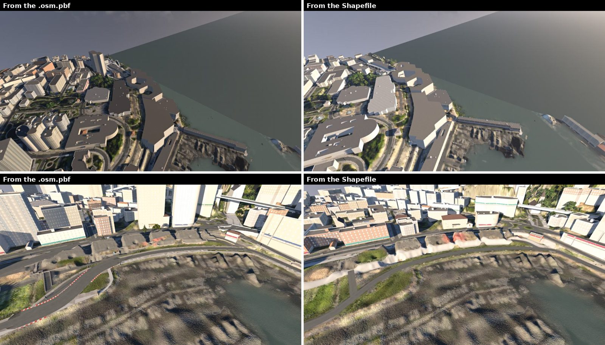
The other formats build exactly what their .osm would: a level from a tester's own map file compressed as .osm.xz came out with the same map data as the plain file, feature for feature, and the same file as .o5m matched it to within a centimetre.
What MapNG does not open, and why
These were asked for too. Each is refused with its reason, so a wrong file is easy to spot.
| Format | Why it cannot build a level | Use instead |
|---|---|---|
.osc, .o5c (change files) | A change file lists edits (create this, move that, delete the other), not a map. On its own it has none of the roads around the edits, and the edits only make sense applied to the map they were made against. | The map file itself, or an .osm.pbf from after the change. |
.obf (OsmAnd) | OsmAnd's own format for drawing its maps on a phone. It keeps OsmAnd's simplified drawing and routing data, not OpenStreetMap's tags and ways, so a road's lanes, width, bridges and the rest are not there to read. | An .osm.pbf of the same area (Geofabrik, BBBike). |
Vector-tile .pbf / .mvt | Map tiles share the .pbf ending with OSM extracts but are a different thing: each tile keeps only a handful of tags for drawing, and cuts every road, river and building at the tile's edge, often simplified, so the shapes are not the real ones. | An .osm.pbf extract (osmium, Geofabrik, BBBike). |
Smoother curves on railways, paths and rivers
OpenStreetMap draws a curve as straight pieces with a corner at each point. Roads were already rounded into smooth curves. Railways, footpaths, cycleways, rivers, canals and streams now are too, each within its own limit:
| Line | Widest curve | Never more than this inside a mapped corner |
|---|---|---|
| Railways | 500 m on main lines, 150 m on sidings, 40 m for trams | 1 m |
| Footpaths, cycleways | 25 to 50 m | 0.75 m |
| Rivers, canals, streams, ditches | 20 to 300 m | 2 m on rivers, 0.5 m on ditches |
| Roads (as before) | 30 to 800 m by class | 3 m |
- What stays put: junctions, level crossings, bridge and tunnel ends, and real sharp corners (a hairpin, a T junction) stay exactly where they are mapped.
- Switches and path joins: where a siding leaves the main line or a path joins another, the line curves smoothly through, and the joining line follows.
- Left as drawn on purpose: power lines (every mapped point is a tower, and the wire is straight between towers) and steps.
- Keep map lines as drawn: a new switch in Map data turns all rounding off, roads included, for maps whose data you have fixed by hand.
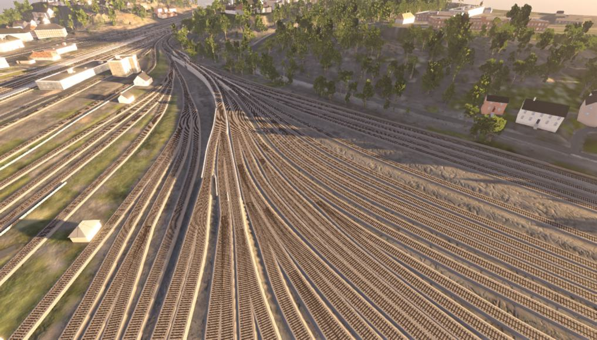
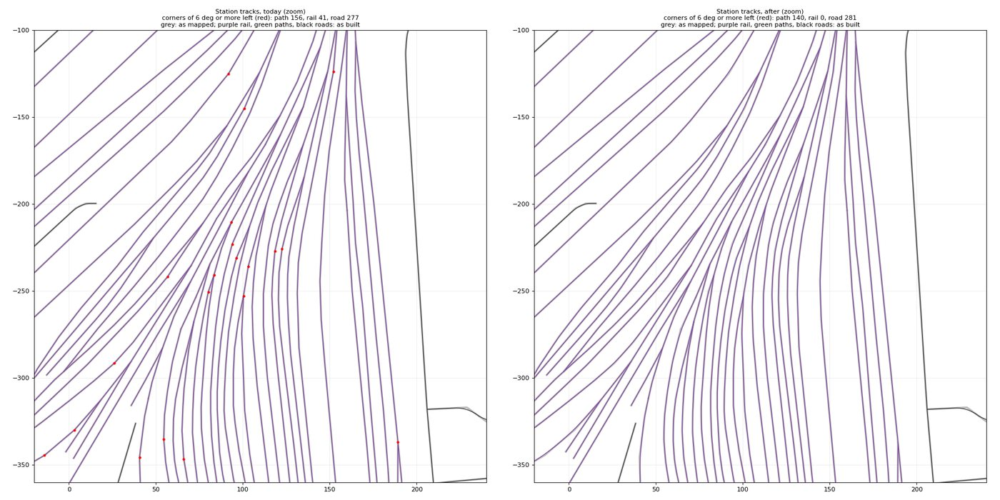
Very large levels, saved and loaded
A tester built a level along 220 km of motorway: 442 pieces. It exported, but MapNG could not list it, its report could not be read, and the game's map showed the road far off any picture. All fixed:
- No size limit in the level file. A level is written piece by piece into one zip as it is built, in the larger zip format (ZIP64) once it passes 65,535 files or 4 GB, and each piece is let go once it is in.
- The game's map view gets one picture per piece, each at its place.
- The progress card moves for levels built in pieces, Cancel works while downloads are still running, and step 1's notes measure the whole shape.
- Road mode warns with the number of pieces on a very long road; on the desktop app it never refuses.
- Tested past the plain zip format's limit. A level padded to 66,711 files (ZIP64) loads in the game like any other.
- The game's map screen shows the whole level. It framed the level together with a small hidden ground piece the game needs, which stood 30 km away, so the roads sat at the edge of an empty view. That piece now sits out of sight under the start.
- A short report for the whole level, one line per piece, with each piece's full report in the level's reports folder. Before, every piece's report went into one file: 70 MB for 442 pieces.
- No backdrop for a level along a road. The land round a long road is mostly far from it (about 150 by 100 km for a 200 km road), too much to download; the level ends at the road's corridor.
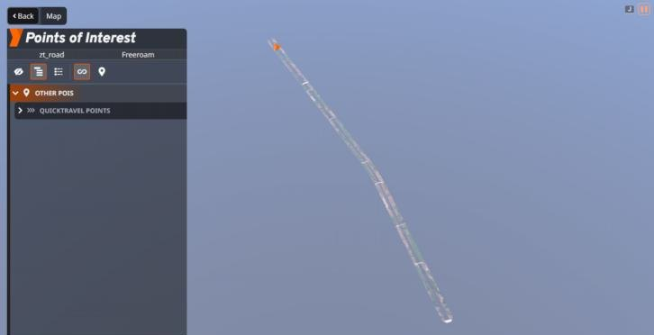
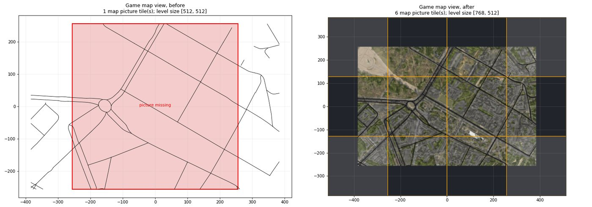
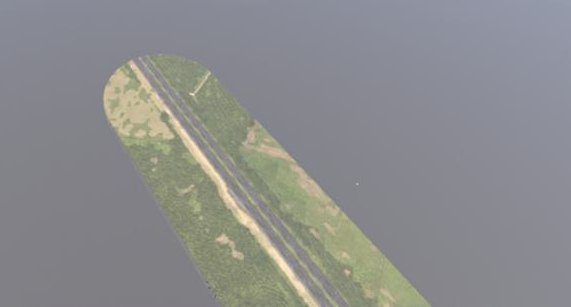
Streets as wide as their kerbs, islands where they are mapped
Where OpenStreetMap maps a street's kerbs as lines, or its surface as an area, MapNG now measures the street between them. Without that every street of a class got the same width: a suburban street in Perth, 7.4 m kerb to kerb, came out 5.5 m, so its curbs stood a metre inside the real kerbs, a strip of bare ground lay between the curb and the mapped sidewalk, and corners came out zig-zag.
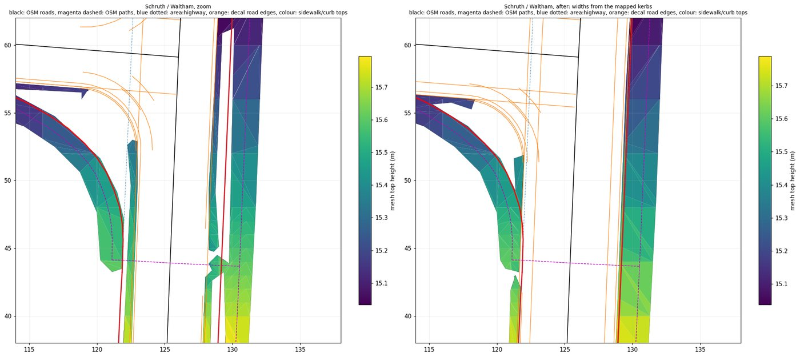
- Street widths from mapped kerbs. Kerb lines on both sides (
barrier=kerb) or a road area (area:highway) give the width, measured every few metres along the street. A taggedwidthstill wins, and a street with a kerb mapped on one side only keeps its usual width. - Traffic islands where they are mapped. Where islands are drawn as areas (
area:highway=traffic_island), a median is raised only there and the road is paved between, instead of one long island guessed from the gap between the carriageways. - No groove down a narrow median. Its two halves, one per carriageway, now meet at one height in the middle where the two roads differ by a few centimetres.
- The verge behind a bare curb (a street with no sidewalk) now rises to the curb's top, as real verges do, instead of leaving the curb standing 15 cm proud of the ground. Not on a slope that falls away, and not on a strip between two roads.
- Footpaths over railway lines. A path crossing the tracks is now a level crossing: the track is laid flush there with the crossing's surface, and the path's paving runs up to the rails. Before, the track kept its stones and sleepers and the path stopped short.
- Turn lanes beside the mapped line. MapNG now reads the
placementtags, which say where a road's mapped line lies across its lanes (placement=right_of:2,placement:forward=left_of:1, a line moving across withplacement:startand:end). A turn lane added on one side of the line now widens the road on that side only, its other edge running straight on, instead of the whole road moving half a lane. - Wide roads as wide as mapped. A tagged
widthon a road with many lanes counted is no longer cut down to its class's usual maximum: a seven-lane street mapped 28 m wide is built 28 m wide, so an extra lane beside a bus stop widens the road instead of squeezing every lane. - Lanes at their mapped widths. Where each lane's width is mapped (
width:lanes,width:lanes:forward,width:lanes:backward), the road is as wide as its lanes added up, its lane lines are painted at those widths, and a placed road is set off its line by them. A turn lane that narrows from one piece of road to the next now takes in only its own side. - Placed roads meet cleanly where they join. Where a road drawn off its mapped line meets the next piece of itself, the two now meet edge to edge, with no step in the edge and no wedge of grass at a slight bend.
- Traffic lights beside the road, not in it, where a road is drawn off its mapped line by placement tags; where a junction's corner has no room, the pole stands a few metres back.
- Rails at the true gauge. The gauge is measured between the rails' inner faces; the rails stood 72 mm too close, so a train built to the real gauge did not fit.
- Roads that divide into two carriageways (and one-way roads that fork or merge) are drawn as one road carrying on, each carriageway starting on its own half, instead of three roads meeting with the wide road's square end showing.
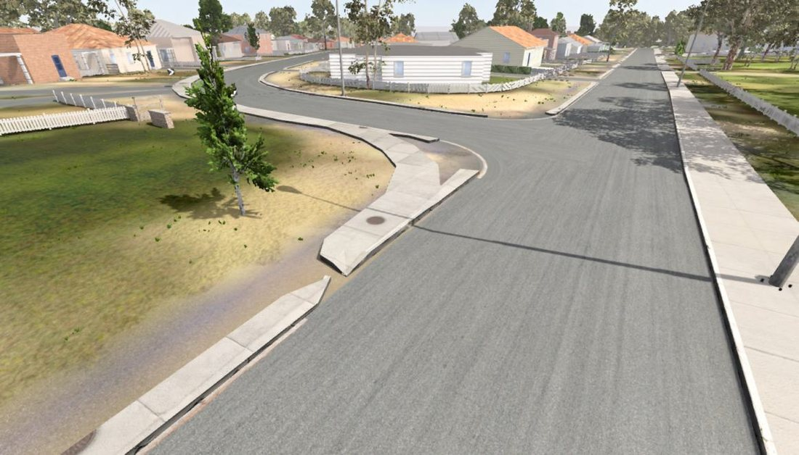
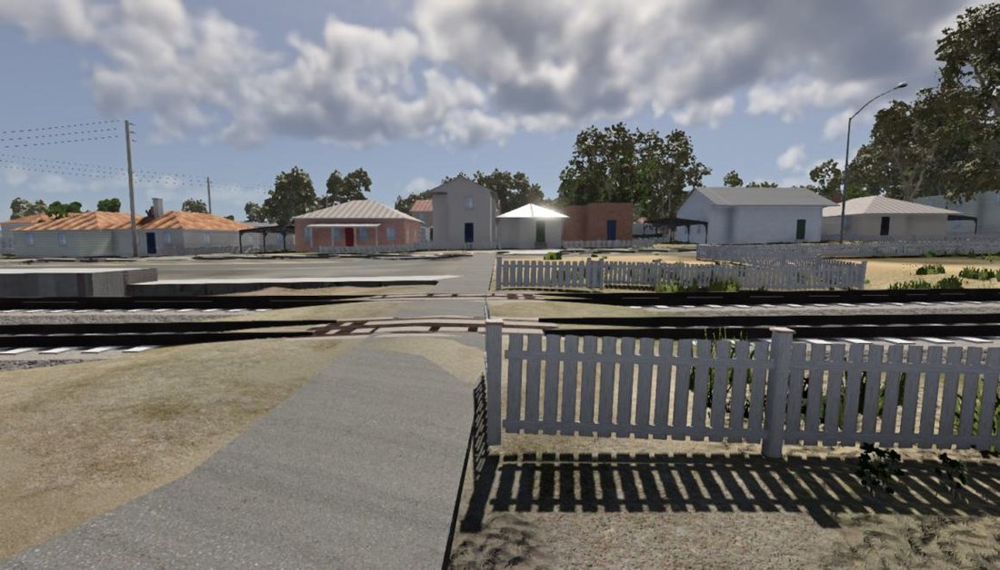
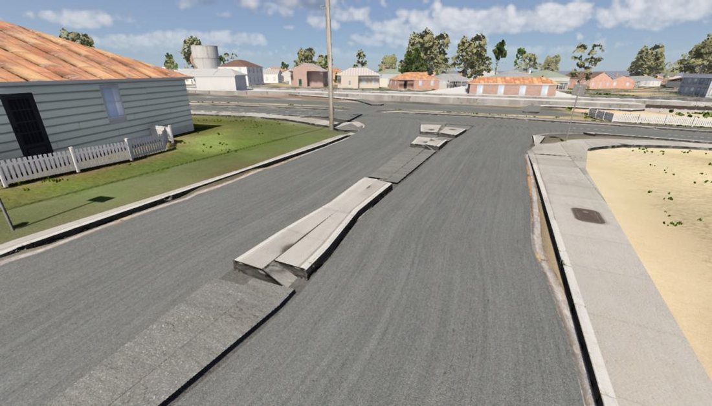
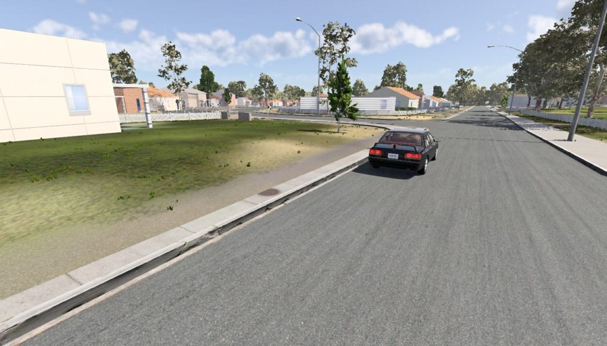
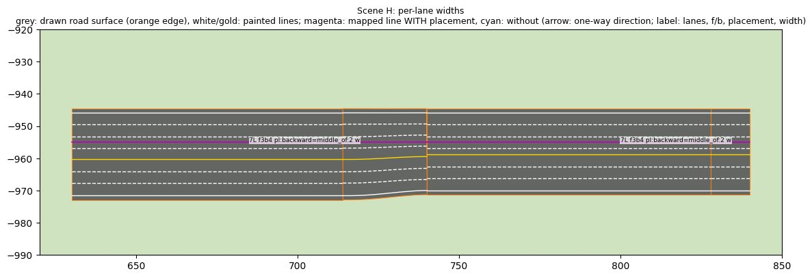
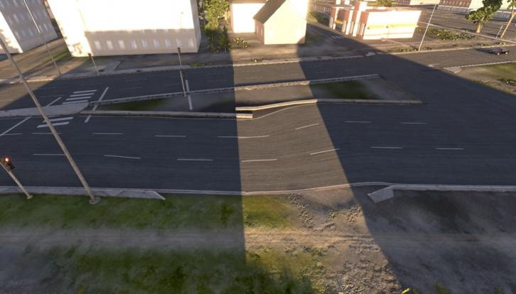
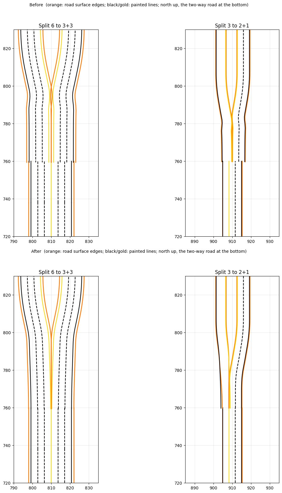
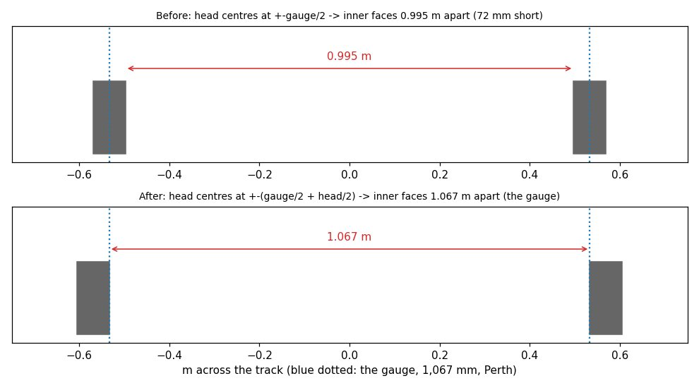
Every one of these cases is now in the official test levels (web: "Official test levels" at the foot of the page; desktop: the levels list), so they are checked in the game whenever the code changes.
Test levels you can drive, and what they caught
MapNG now has five official test levels, built from made-up map data that holds one of every case MapNG builds: roads and junctions, bridges and tunnels, terrain and water, sidewalks, and every map tag with a game model. Each case carries a label in the game. Get them from Official test levels at the foot of the website, or in the desktop app's levels list, which puts them straight into your mods folder (checked against their checksums). Driving them turned up these, now fixed:
- Water: lakes reflect the sky from a driver's height; docks, fish ponds, wastewater, reflecting pools and salt pans are water (docks were bare ground); each kind of still water has its own look; a river gets a channel dug under it where terrain shaping is on; a river outline the river line leaves out is built as water where its ground is flat.
- Coasts: breakwaters and groynes mapped as lines are built as rock moles at their width; piers mapped as a line are kept (a short jetty was dropped, a longer one came back closed).
- Trees: with no satellite picture, the land cover's tree cells plant the tree cover; mapped woods are planted over their whole outline; shrubs mapped as points are planted.
- Roads: where a lane ends, the lines follow the taper and the closing lane's divider stops where it begins; mini roundabouts get a low painted dome; zebra and signalled crossings are painted; unpaved roads look and feel like their surface; speed hump chevrons sit on the hump's top; the road's edge blend reaches its shoulder, with no ground showing between.
- Railways: level crossings get barriers with the arm raised (none where the map says there are none); platforms mapped as lines are built and platform areas are paved, not grass.
- Buildings and structures: glass greenhouses, shipping containers, roofless ruins, open roofs on posts, hipped roofs on square churches; twin tunnel bores' wing walls meet as one.
- In the game: no black boxes at a distance on a first load (the level reloads its baked pictures); textures the game ships are linked, not copied, as BeamNG asks; where two power lines share a pole, it is the tall one.
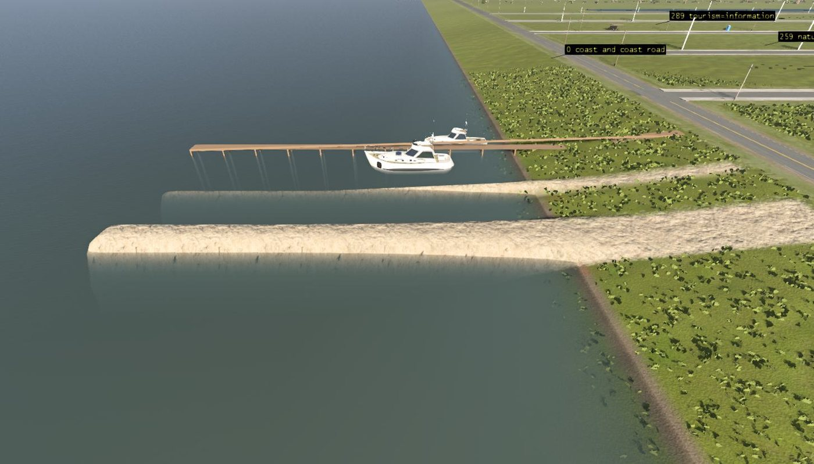
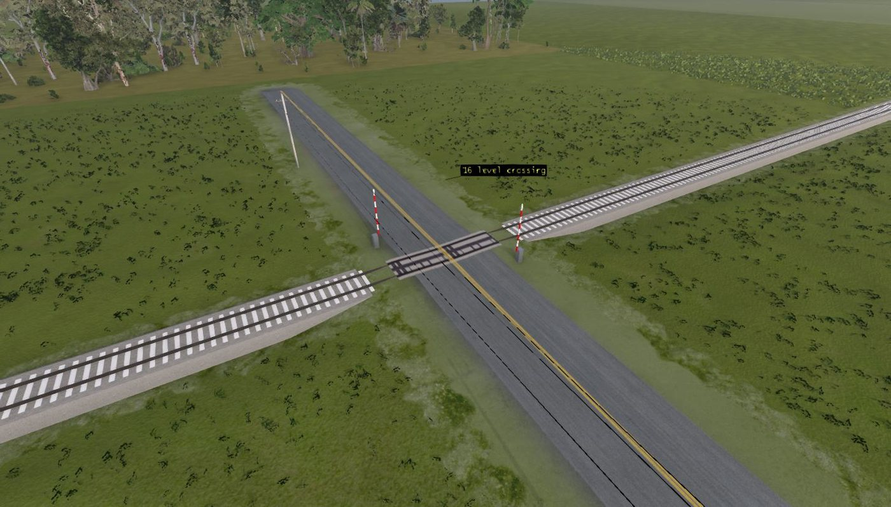
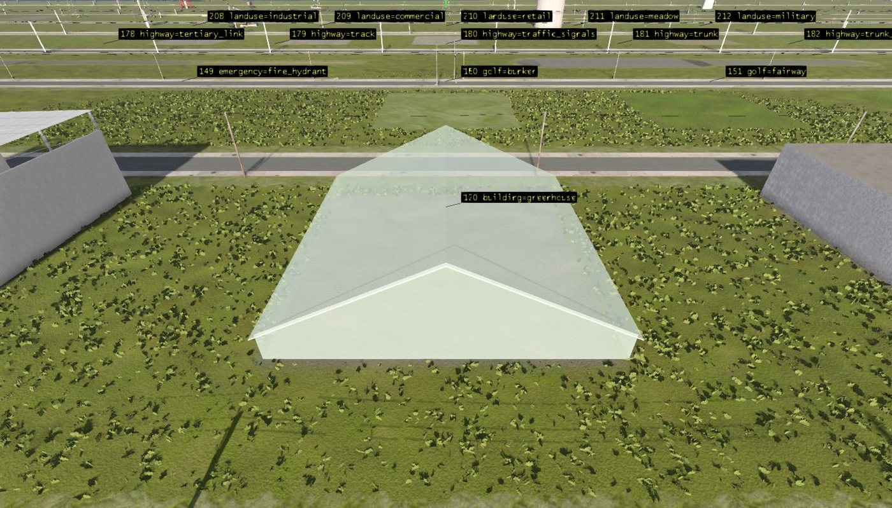
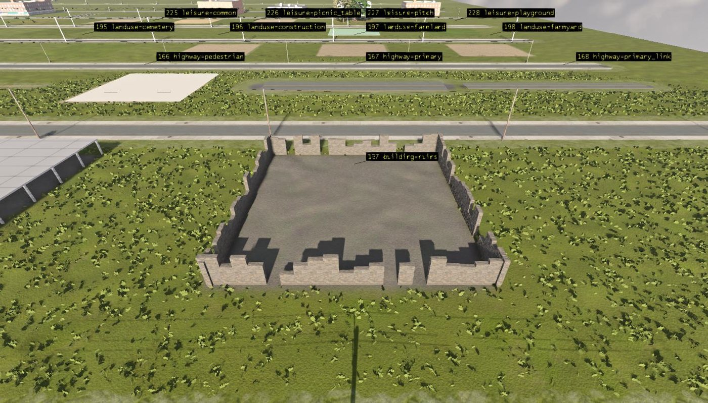
Fixes
- Slip roads meet the outer lane. A slip road joining a wider street now runs into its outer lane, with the street's lines carried through, instead of stopping at its centre line.
- Power lines on their poles. A power line mapped on pole nodes (
power=pole) now stands on poles, not towers, with one support where lines share a node (from a tester's map of Perth). - No raised paving over the tracks. Where a street or a paved area crosses a railway at ground level, its raised paving now stops at the track bed instead of covering the rails (Perth).
- The desktop app no longer runs out of memory showing the surroundings on a big level. The 2D preview showed the backdrop's eight tiles rebuilt at full size in the window, up to 1 GB each; it now shows small copies kept when they are downloaded.
- Sidebar sections are cards with a tinted header, easier to tell apart.
- The old batch mode is gone. Tiles in step 1 replaced it in 0.3.6; an unfinished batch job saved by an older version can no longer be opened.
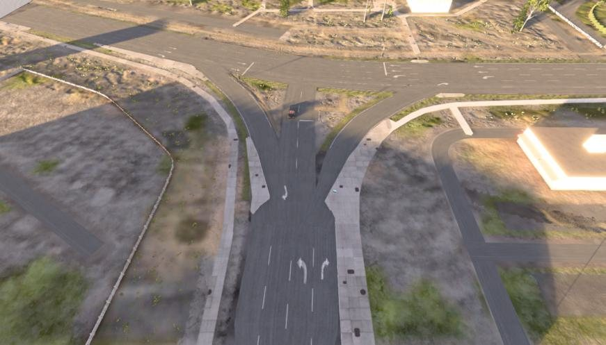
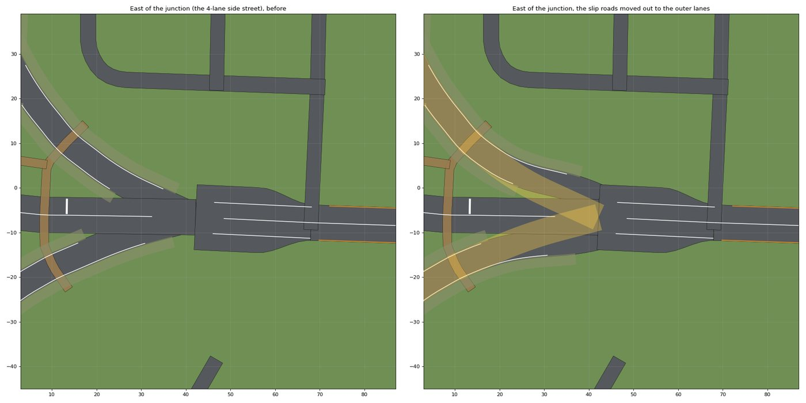
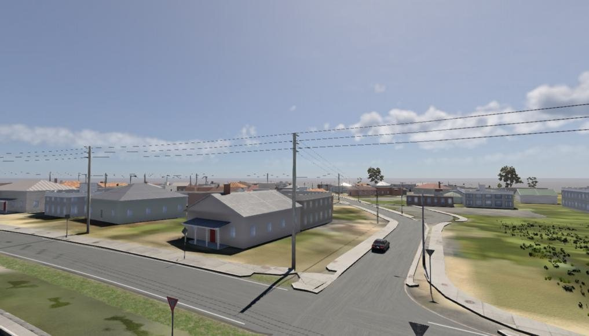
Still being worked on
- Sidewalks at the water and at raised roads, started again from scratch.
- Long bridges planned once for the whole level, as tunnels are; road-to-bridge and road-to-tunnel joins.
- Road junctions that still bend tightly where a side street meets a main road's bend.
- A backdrop that follows a road level's corridor.